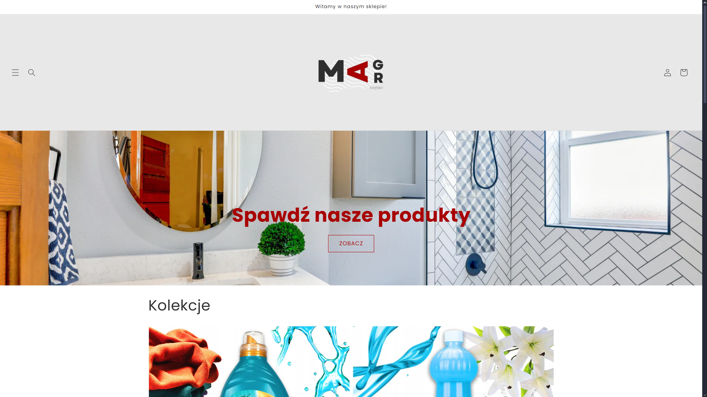
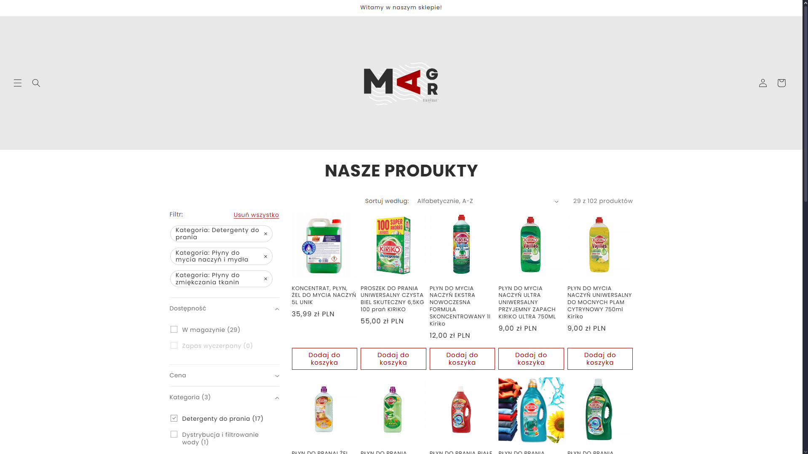
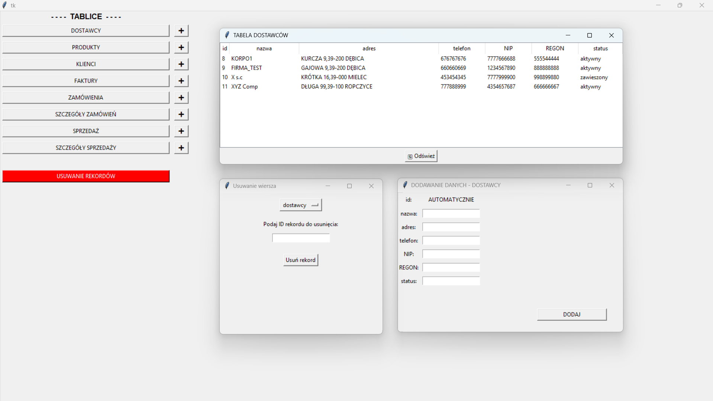
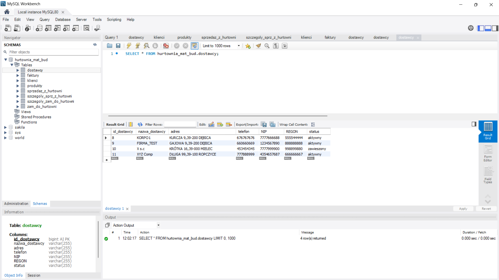
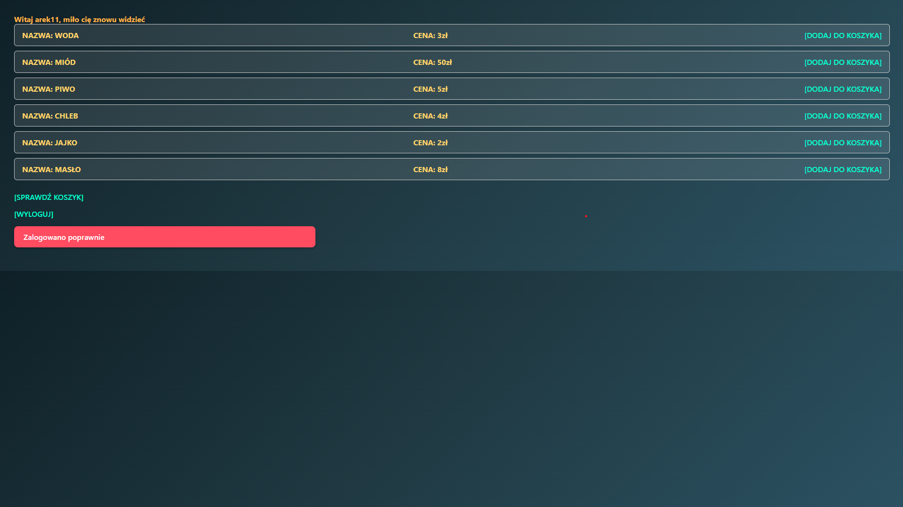
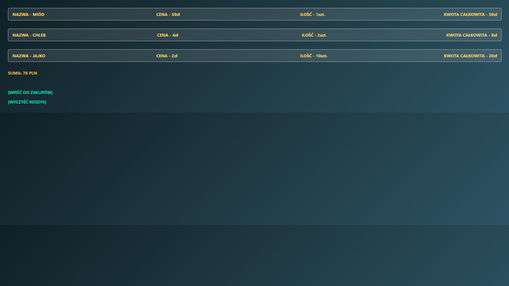
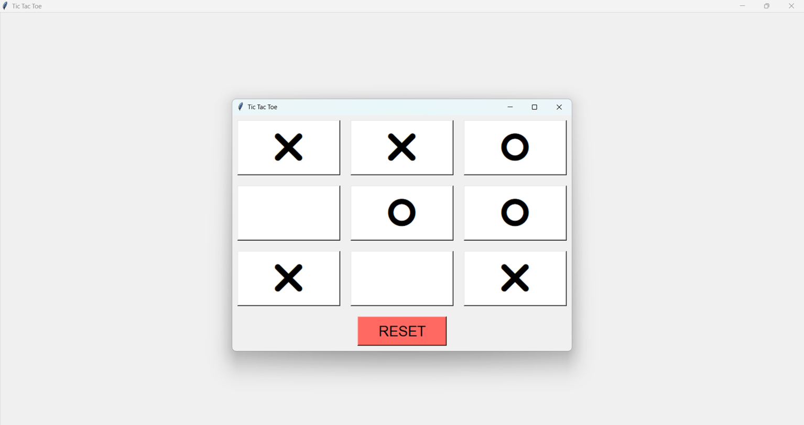

ABOUT_ME
I am currently working as an IT Business Consultant at Sii Poland.
I truly enjoy learning and growing in this role, where I support the creation, migration, and optimization of websites using different
CMS platforms and digital tools. This work gives me the opportunity to combine technology with business needs and collaborate across teams to deliver effective solutions.
Outside of my professional role, I continue to explore programming as a hobby, with a particular interest in Python and backend technologies.
I enjoy building small projects, experimenting with frameworks, and strengthening my technical background alongside my consulting work.
I’m focused on continuous development — both professionally and personally.
At work, I aim to broaden my expertise in digital transformation and CMS-driven projects,
while on the technical side I’m expanding my knowledge in backend development and ERP systems.
I value curiosity, teamwork, and problem-solving, and I’m always open to new opportunities to grow and collaborate.
Feel free to explore my portfolio and connect with me!
EXPERIENCE
IT Business Consultant – Sii Poland
August 2025 – Present | Rzeszów, Poland
Supporting client in the development and migration of corporate websites by working with a range of CMS platforms and digital tools.
My role focuses on ensuring smooth content management processes, adapting solutions to business needs, and coordinating with different project teams.
This position gives me the opportunity to gain valuable experience in large-scale web operations and digital transformation.
I am continuously learning and expanding my skills in consulting, technology, and process optimization.
Freelance Web Developer
Delivered a complete Shopify online store solution for Magmar S.C., including setup, configuration, and customization.
Responsibilities included product catalog management, payment integration, shipping rules configuration, and domain management.
Integrated external logistic service (InPost) via API using available Shopify apps and implemented store design adjustments to match client branding.
Ensured smooth operational workflow and trained the client on store management basics.
The store can be found online at
https://sklep-magmar.com.


Sales Consultant - KiM Group
July 2024 – May 2025 (11 months) | Dębica, Poland
Worked primarily with customers, providing excellent service and developing strong communication and problem-solving skills.
Gained hands-on experience using CRM and ERP systems, as well as Excel, to manage client information, orders, and billing.
Additionally, I occasionally assisted with basic technical support and troubleshooting tasks related to service issues,
giving me valuable insight into telecom operations.
Collaborated with technical teams when needed and ensured smooth communication between customers and internal departments.
EDUCATION
University of Information Technology and Management in Rzeszów
Computer Science (Bachelor’s Degree)
March 2025 – March 2028 (In Progress)
Core coursework includes programming in Python, web development (HTML, CSS, JavaScript), databases (SQL),
algorithms, data structures, and software engineering principles.
Engaged in projects that combine theoretical knowledge with practical implementation.
Developed applications that automate processes and provide interactive user experiences.
Eugeniusz Kwiatkowski Secondary School No. 2 in Dębica
Teleinformatics Technician
September 2019 – June 2024
Completed a comprehensive technical program focused on network configuration, telecommunications, and systems administration.
Gained experience with Cisco router and switch setup, VLAN configuration, VoIP implementation, and basic network security.
Studied Windows Server and Linux operating systems, including user management, permissions, and server roles.
Achieved high marks on final exams and completed a practical thesis on enterprise network deployment.
PROJECTS
Tkinter Database Manager
Developed a Python application with a Tkinter GUI to manage warehouse operations including suppliers, products, clients, invoices, orders, and sales.
The app connects to a MySQL backend, supporting CRUD operations with relational data integrity and cascading deletes.
Technologies: Python 3.x, Tkinter, MySQL, mysql-connector-python


Flask Shopping Cart
Built a simple e-commerce backend using Flask, demonstrating routing, form handling, sessions, and user authentication.
Implemented product listing, shopping cart functionality, and flash messaging for feedback.
Technologies: Python, Flask, Flask-WTF, Jinja2, HTML, CSS


TicTacToe SmartBot or PvP
Created a Python GUI application featuring a Tic Tac Toe game with two play modes: player versus player and player versus a basic AI bot.
Implemented with Tkinter to practice GUI programming and game logic.
